import pandas as pd
import numpy as np7 Realizzazione di Grafici e Visualizzazione dei Dati
In questo notebook affronteremo il problemma della visualizzazione dei dati. In generale ci potremmo trovare a dover costruire un grafico in due situazioni diverse: 1. durante l’analisi esplorativa del dataset 2. durante la fase finale dell’analisi per mostrare i risultari ottenuti
La trattazione sara cosi suddivisa: - Grafici Statici: Matplotlib - Introduzione all’API - Integrazione con Pandas e Seaborne - Grafici Dinamici: Vega Altair
Le librerie che utilizzeremo saranno:
7.1 Grafici Statici: Matplotlib
%matplotlib inlineMatplotlib e il cavalo di battaglia in python per la creazione di grafici. Permette di visualizzare i dati in molti modi differenti, creando grafici diversi. I grafici che creeremo saranno statici e non interattivi. Il risultato del nostro codice sara un’immagine.
L’oggetto principale presente all’interno della libreria e il pyplot, comunemente chiamato plot.
import matplotlib.pyplot as plt
array = pd.Series(np.arange(10))
plt.plot(array)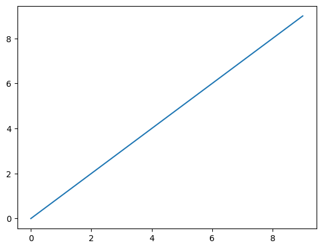
🐦⬛ Trattazione Completa
La libreria matplotlib non puo essere completamente trattata nel corso di questo notebook. Ci limiteremo solamente a vedere i fondamentali. Per chi volesse ulteriormente approfondire, si consiglia di dare un occhio alla documentazione.
7.1.1 Introduzione all’API
7.1.1.1 Figure e sottografici
I grafici in matplotlib risiedono in un oggetto chiamato figure. Questo oggetto permette di specificare quanti sottografici vogliamo all’interno della nostra figura.
# figura con 4 grafici organizzati su due righe diverse
fig = plt.figure()
ax1 = fig.add_subplot(2,2,1) # primo grafico
ax2 = fig.add_subplot(2,2,2) # secondo grafico
ax3 = fig.add_subplot(2,2,3) # terzo grafico
# creazione dei grafici
ax3.plot(np.random.standard_normal(50).cumsum(), color = 'black', linestyle = 'dashed');
ax1.hist(np.random.standard_normal(100), bins = 20, color = 'black', alpha = 0.3);
ax2.scatter(np.arange(30), np.arange(30) + 3*np.random.standard_normal(30)) # type: ignore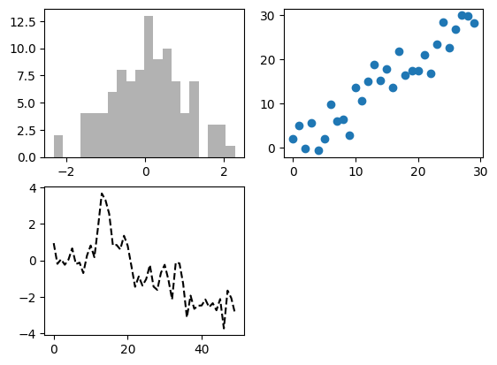
Una volta che abbiamo deciso quanti grafici vogliamo nella nostra figura, possiamo identificare uno d questi grafici. L’oggetto che permette di farlo si chiama Axes e dispone di una serie di attributi e metodi che ne rendono semplice l’utilizzo.
# axes object
ax3 <Axes: >Esiste un metodo piu veloce, utilizzando la funzione matplotlib.pyplot.subplots, i cui parametri fondamentali sono: 1. nrows: numero di righe di sottografici [int] 2. ncols: numero di colonne di sottografici [int] 3. sharex sharey: tutti grafici devono utilizzare lo stesso asse x. subplot_kw: dizionario di parametri per i subplot che poi possono essere utilizzati dalla funzione figure.add_suplot per la creazione del grafico
# generazione di una figure con 3 axes (plot)
fig, axes = plt.subplots(2, 3)
# aggiustare la spaziatura
fig.subplots_adjust(left=None, bottom=None,)
axesarray([[<Axes: >, <Axes: >, <Axes: >],
[<Axes: >, <Axes: >, <Axes: >]], dtype=object)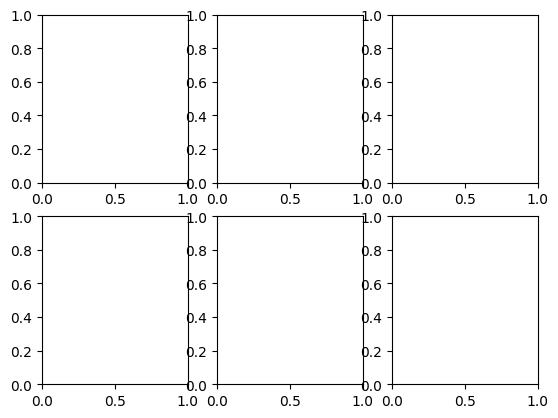
plot_firstrow_center = axes[0,1]7.1.1.2 Colori, Marker e Linee
# tela bianca
fig = plt.figure()
ax = fig.add_subplot(1,1,1)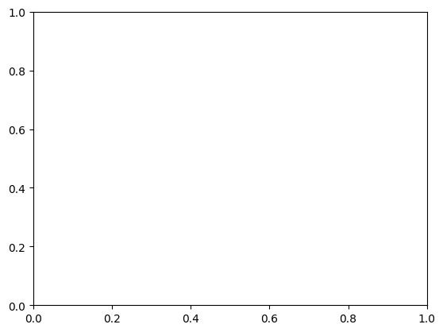
ax.plot(np.random.standard_normal(30).cumsum(), color = 'black', linestyle = 'dashed', marker = 'o')
fig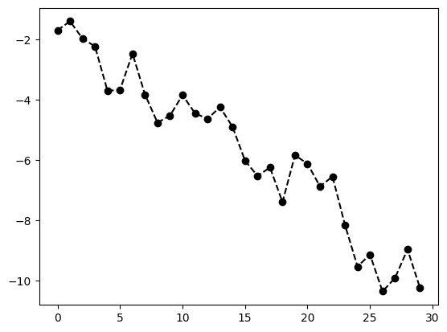
np.random.seed(42)
# decidere il tipo di interpolazione fra punti
fig = plt.figure()
ax = fig.add_subplot(1,1,1)
data = np.random.standard_normal(30).cumsum()
ax.plot(data, marker = 'o', color = 'black', linestyle = 'dashed', label = 'default')
ax.plot(data, color = 'red', linestyle = 'dashed', label = 'steps_post', drawstyle = 'steps-post')
ax.legend()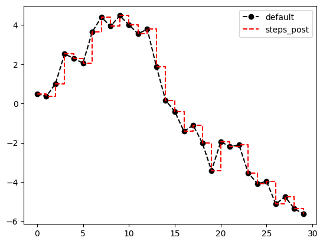
7.1.1.3 Tick, etichette e legenda
La maggior parte delle decorazioni di un plot possono essere modificate tramite appositi metodi di matplotlib.
# implementazione precisa
np.random.seed(42)
fig, ax = plt.subplots()
ax.plot(np.random.standard_normal(1000).cumsum());
ticks = ax.set_xticks([0, 250, 500, 750, 1000])
labels = ax.set_xticklabels(['one', 'two', 'three', 'four', 'five'], rotation = 30, fontsize = 8)
x_label = ax.set_xlabel('Stages');
ax.set_title('plot');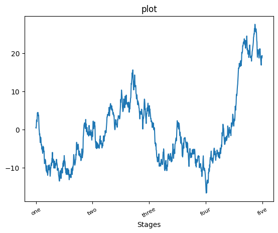
# implementazione veloce
np.random.seed(42)
fig, ax = plt.subplots()
ax.plot(np.random.standard_normal(1000).cumsum());
ax.set(title = 'plot', xlabel = 'Stages');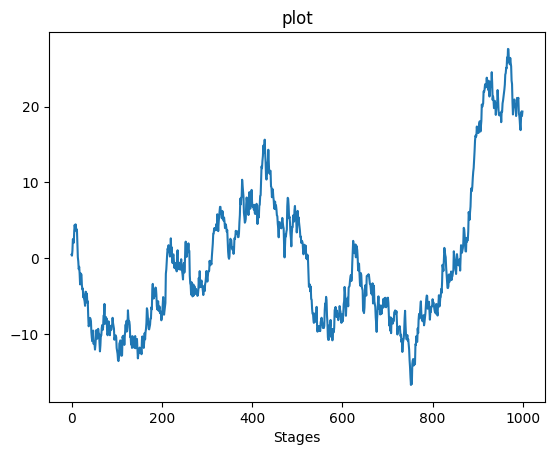
# legenda
fig, ax = plt.subplots();
ax.plot(np.random.standard_normal(1000).cumsum(), color = 'black', label = 'one');
ax.plot(np.random.standard_normal(1000).cumsum(), color = 'red', linestyle = 'dashed', label = 'two');
ax.plot(np.random.standard_normal(1000).cumsum(), color = 'green', linestyle = 'dotted', label = 'three');
ax.legend();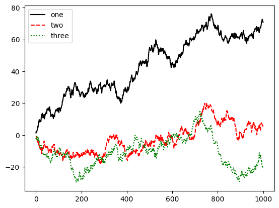
7.1.2 Integrazione con pandas e seaborne
La libreria matplotlib e di livello abbastanza basso. E possibile creare un grafico con un numero virtualmente arbitrario di decorazioni. Esistolo librerie di livello piu elevato che permettono di rendere piu snello il procedimento. Una di queste e seaborne.
Inoltre, pandas utilizza automaticamente matplotlib per generare dei grafici a partire da Series e DataFrame.
s = pd.Series(np.random.standard_normal(10).cumsum(), index = np.arange(0,100, 10))
s.plot();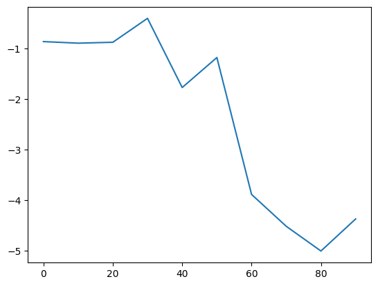
Series.plotQuesta funzione possiede molti parametri, che permettono di ottenere un grafico in maniera veloce a partire dalla
Series. Per chi volesse approfondire: documentazione.
df = pd.DataFrame(np.random.standard_normal((10,4)).cumsum(0),
columns = ['A', 'B', 'C', 'D'],
index = np.arange(0,100,10))
plt.style.use('grayscale')
df.plot();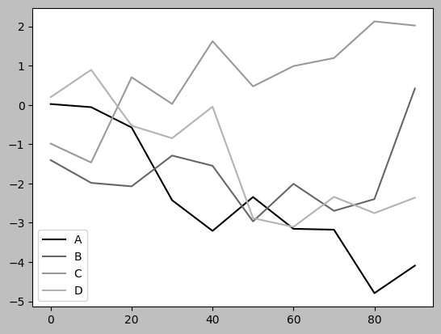
fig, axes = plt.subplots(2, 1)
data = pd.Series(np.random.uniform(size = 16), index = list('abcdefghijklmnop'));
data.plot.bar(ax=axes[0], color = 'black', alpha = 0.7);
data.plot.barh(ax=axes[1], color = 'black', alpha = 0.7);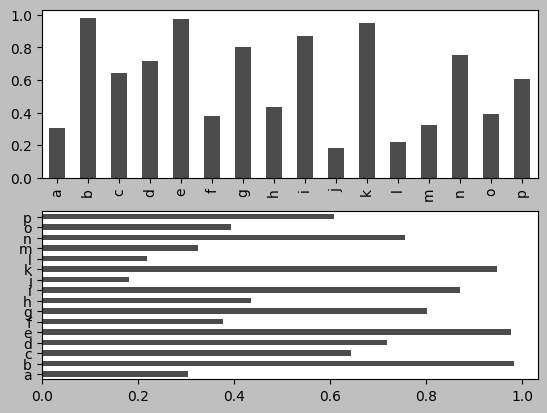
df = pd.DataFrame(
np.random.uniform(size = (6, 4)),
index = ['one', 'two', 'three', 'four', 'five', 'six'],
columns = pd.Index(['A', 'B', 'C', 'D'], name = 'Genus')
)
df| Genus | A | B | C | D |
|---|---|---|---|---|
| one | 0.444574 | 0.742370 | 0.228331 | 0.058458 |
| two | 0.299929 | 0.474309 | 0.168020 | 0.354797 |
| three | 0.399983 | 0.057392 | 0.583307 | 0.884343 |
| four | 0.151743 | 0.597808 | 0.664739 | 0.419335 |
| five | 0.701098 | 0.410732 | 0.504637 | 0.007353 |
| six | 0.691720 | 0.661343 | 0.038401 | 0.368250 |
df.plot.bar();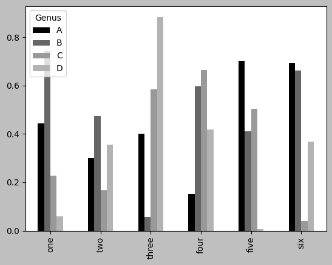
df.plot.barh(stacked = True, alpha = 0.5);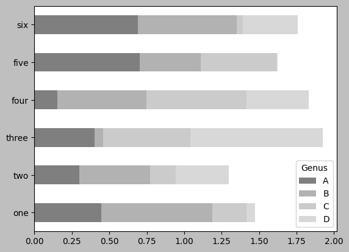
tips = pd.read_csv('examples/tips.csv')
tips.head()| total_bill | tip | smoker | day | time | size | |
|---|---|---|---|---|---|---|
| 0 | 16.99 | 1.01 | No | Sun | Dinner | 2 |
| 1 | 10.34 | 1.66 | No | Sun | Dinner | 3 |
| 2 | 21.01 | 3.50 | No | Sun | Dinner | 3 |
| 3 | 23.68 | 3.31 | No | Sun | Dinner | 2 |
| 4 | 24.59 | 3.61 | No | Sun | Dinner | 4 |
# tabella di frequenza: numero di mance per giorno
party_counts = pd.crosstab(tips['day'], tips['size'])
party_counts = party_counts.reindex(index = ['Thur', 'Fri', 'Sat', 'Sun'])
party_counts| size | 1 | 2 | 3 | 4 | 5 | 6 |
|---|---|---|---|---|---|---|
| day | ||||||
| Thur | 1 | 48 | 4 | 5 | 1 | 3 |
| Fri | 1 | 16 | 1 | 1 | 0 | 0 |
| Sat | 2 | 53 | 18 | 13 | 1 | 0 |
| Sun | 0 | 39 | 15 | 18 | 3 | 1 |
party_counts = party_counts.loc[:, 2:5]
party_pcts = party_counts.div(party_counts.sum(axis = 'columns'), axis = 'index')
party_pcts| size | 2 | 3 | 4 | 5 |
|---|---|---|---|---|
| day | ||||
| Thur | 0.827586 | 0.068966 | 0.086207 | 0.017241 |
| Fri | 0.888889 | 0.055556 | 0.055556 | 0.000000 |
| Sat | 0.623529 | 0.211765 | 0.152941 | 0.011765 |
| Sun | 0.520000 | 0.200000 | 0.240000 | 0.040000 |
# tips % of the final bill
import seaborn as sns
tips['tip_pct'] = tips['tip']/(tips['total_bill'] - tips['tip'])
tips.head() | total_bill | tip | smoker | day | time | size | tip_pct | |
|---|---|---|---|---|---|---|---|
| 0 | 16.99 | 1.01 | No | Sun | Dinner | 2 | 0.063204 |
| 1 | 10.34 | 1.66 | No | Sun | Dinner | 3 | 0.191244 |
| 2 | 21.01 | 3.50 | No | Sun | Dinner | 3 | 0.199886 |
| 3 | 23.68 | 3.31 | No | Sun | Dinner | 2 | 0.162494 |
| 4 | 24.59 | 3.61 | No | Sun | Dinner | 4 | 0.172069 |
sns.barplot(x='tip_pct', y='day', data = tips, orient = 'h')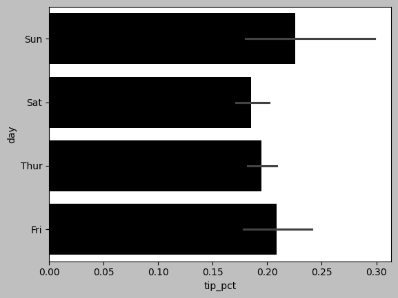
In questo caso si noti come venga automaticamente calcolato un intervallo di confidenza al 95% per il valore della varaibile.
# splitting he bar wrt a particular value
sns.barplot(x='tip_pct', y = 'day', hue = 'time', data = tips, orient = 'h')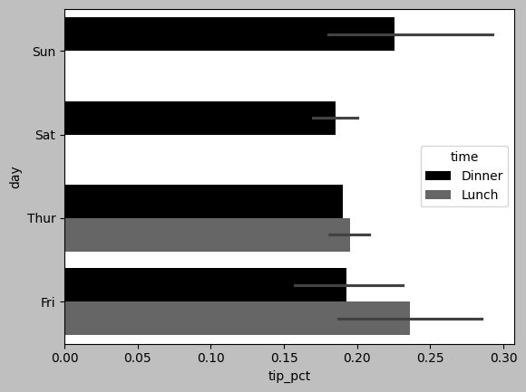
# styling
sns.set_style('whitegrid')
sns.barplot(x='tip_pct', y = 'day', hue = 'time', data = tips, orient = 'h')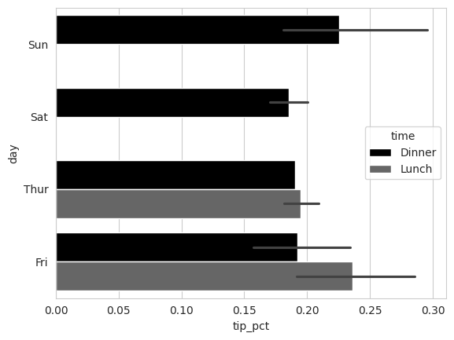
7.1.2.1 Istogrammi per le distribuzioni di probabilita
tips['tip_pct'].plot.hist(bins = 50);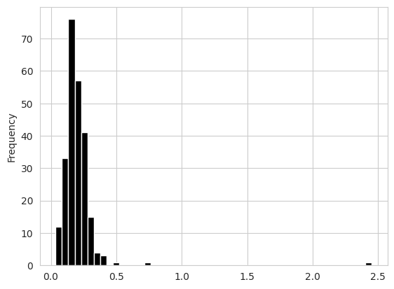
# using a mixture of normals to approximate the distribution of tip_pct variable
tips['tip_pct'].plot.density()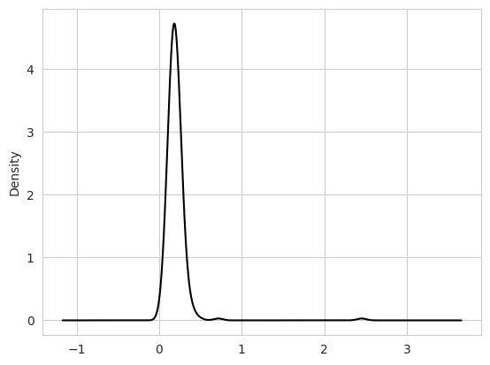
camp1 = np.random.standard_normal(200)
camp2 = 2*np.random.standard_normal(200) + 10
values = pd.Series(np.concatenate([camp1, camp2])) # long vector stacking camp1 and camp2
sns.histplot(values, bins = 100, color = 'black'); # pyright: ignore[reportArgumentType]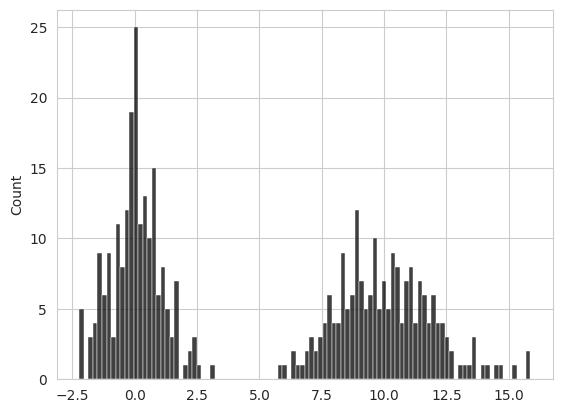
7.1.2.2 Diagrammi di dispersione (scatter plot)
macro = pd.read_csv('examples/macrodata.csv')
data = macro[['cpi', 'm1', 'tbilrate', 'unemp']]
# calcolo dello scarto rispetto all'elemento nella riga precedente
trans_data = np.log(data).diff().dropna() # type: ignore
trans_data.tail()| cpi | m1 | tbilrate | unemp | |
|---|---|---|---|---|
| 198 | -0.007904 | 0.045361 | -0.396881 | 0.105361 |
| 199 | -0.021979 | 0.066753 | -2.277267 | 0.139762 |
| 200 | 0.002340 | 0.010286 | 0.606136 | 0.160343 |
| 201 | 0.008419 | 0.037461 | -0.200671 | 0.127339 |
| 202 | 0.008894 | 0.012202 | -0.405465 | 0.042560 |
ax = sns.regplot(x = 'm1', y = 'unemp', data = trans_data)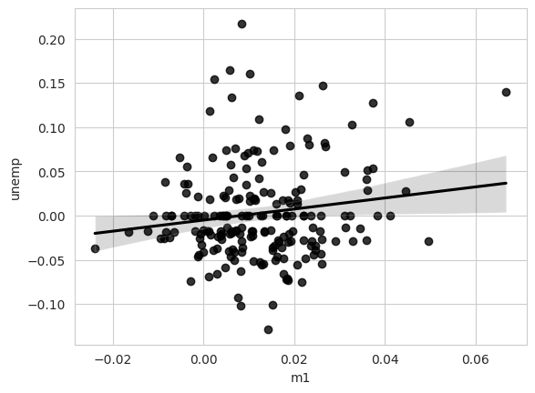
# matrix of scatter plots with seaborne
sns.pairplot(trans_data, diag_kind = 'kde', plot_kws = {'alpha' : 0.2});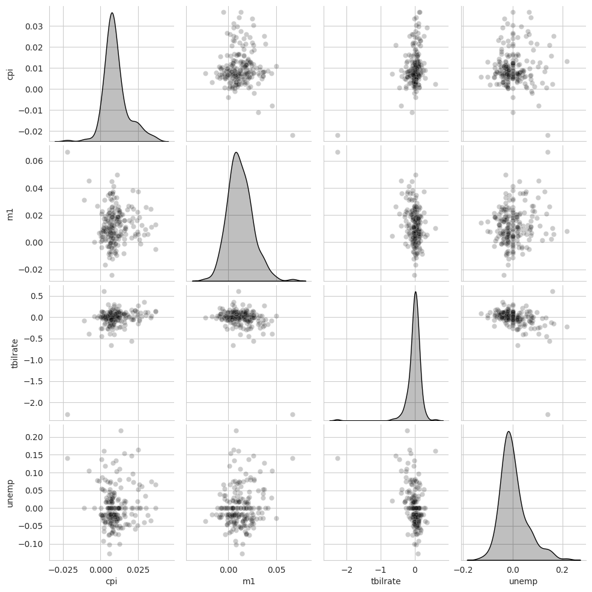